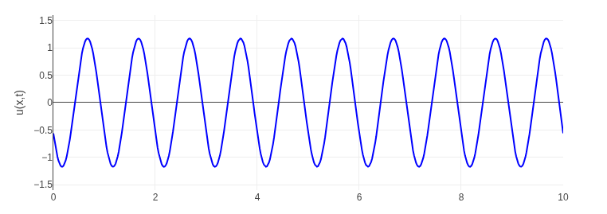

The Universal Language of Waves
Waves are everywhere — from ripples on a pond to sound in air and light across space. In physics, all waves are unified through a single elegant mathematical idea — the wave equation. It describes how disturbances travel through space and time, carrying energy and information in a predictable manner.
The General Wave Equation
The one-dimensional form of the wave equation is:
Here, u(x,t) represents the wave’s displacement over time and v is the wave speed.
It shows that how fast a point accelerates in time depends on the curvature of its shape in space —
linking geometry with motion.
Physical Meaning
This equation reveals the deep connection between time and space. The second derivative in time represents how quickly motion changes, while the second derivative in space represents how curved or distorted the wave is. Their equality ensures that energy flows smoothly through space — the essence of all wave behavior.
Physically, this means that if one point of the medium moves, it pulls on its neighbors, transferring motion step by step — just like how a small shake at one end of a rope travels to the other. No material actually travels with the wave; only disturbance and energy do. The shape that satisfies this equation is one that can reproduce itself in motion, preserving form while shifting position — a mathematical signature of a wave.
In essence, the wave equation describes how local imbalance becomes motion. It tells us that every change in space demands a corresponding change in time, linking geometry and dynamics. That’s why this same equation appears in acoustics, electromagnetism, and even quantum mechanics — because wherever energy spreads in a continuous medium, this logic rules.
Visual Representation
A simple visualization of a wave traveling through space and time (animation available):
A String as an Example
Consider a stretched string fixed at both ends. If you pluck it at some point, the tension in the string tries to restore it to its original straight shape. This restoring force propagates along the string, causing adjacent segments to move. By applying Newton’s second law to each infinitesimal segment, we see that the acceleration of a small segment is proportional to the curvature of the string at that point. This leads directly to the one-dimensional wave equation.
The general solution of this equation is:
This solution represents two waves traveling in opposite directions along the string. The function f(x - vt) represents a wave moving to the right,
while g(x + vt) represents a wave moving to the left. Physically, it means that a single pluck generates waves that reflect back and forth between the fixed ends.
Each wave preserves its shape as it moves, demonstrating a key property of solutions to the wave equation: the propagation of disturbances without distortion. The string’s energy is carried along with the wave, not by the material points themselves, but by the motion of these points transmitting energy from one segment to the next. This simple model captures the essence of waves in all linear media: local disturbances propagate according to the geometry of the system.
Moreover, this formalism helps us understand standing waves, resonance, and harmonics. When the waves reflect at the fixed boundaries, they can interfere constructively or destructively, creating patterns where certain points remain stationary (nodes) and others oscillate with maximum amplitude (antinodes). This is the foundation for understanding musical instruments, stringed devices, and even quantum wavefunctions in confined systems.
Extending to Three Dimensions
In reality, many physical systems are not one-dimensional. Sound waves travel in air, electromagnetic waves propagate through space, and water waves move across a two-dimensional surface. To describe these, we extend the wave equation to three spatial dimensions. Mathematically, this introduces the Laplacian operator, which accounts for curvature and variation of the wave in all directions:
Here, the Laplacian ∇² sums the second derivatives of u with respect to x, y, and z.
This ensures that the wave equation captures how disturbances spread in every spatial direction simultaneously.
This three-dimensional formulation governs many phenomena: the compression and rarefaction of air in sound waves, the oscillating electric and magnetic fields in light, and even the probabilistic spread of quantum particles described by the Schrödinger equation. It highlights a universal principle: energy and disturbances propagate smoothly through space following a predictable pattern.
Solving the three-dimensional wave equation reveals rich behaviors such as diffraction, interference, and the formation of spherical waves. The mathematical framework allows us to predict how waves bend around obstacles, reflect off surfaces, and combine to create complex patterns — essential concepts in acoustics, optics, and quantum mechanics.
Understanding waves in multiple dimensions also introduces the notion of boundary conditions in space: how walls, interfaces, or obstacles influence the wave’s motion. By carefully analyzing these conditions, we can model everything from the vibration of a drumhead to electromagnetic cavity resonators and ocean wave dynamics.
Thinking Beyond Boundaries
The wave equation is more than a mathematical model — it’s a principle of nature. It teaches that:
- Disturbances spread logically through space and time.
- Energy and information move continuously without loss of structure.
- Every wave, from water to light, obeys the same underlying logic.
In this way, the wave equation becomes a bridge between mathematics and the physical universe — a perfect harmony between symmetry, motion, and causality.